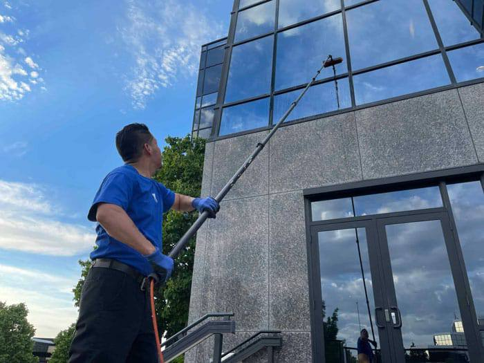
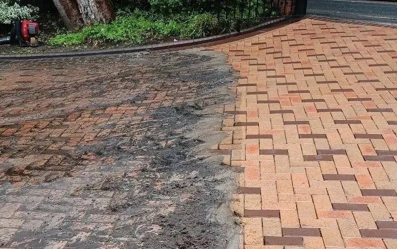
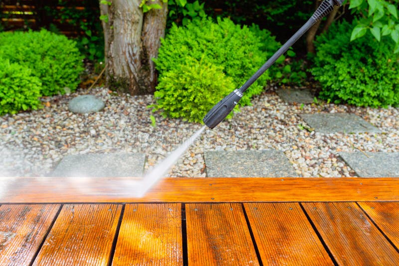

Teenused

Akende pesu
-
Seestpoolt – Traditsiooniline kummiga pesu spetsiaalse
lahusega.
-
Väljastpoolt – Puhas DI (deioniseeritud) vesi triipude-
ja pleki vabaks tulemuseks.
-
Raamid, aknalauad- ja liistud kuuluvad alati hinna sisse.
-
Turvaline ja tõhus kuni 8,5 m kõrguseni ilma redelita.
Kivitee / sissesõidutee puhastus
-
Kõrgsurvepesu eemaldab rohu, sambliku ja mustuse iga kivi
vahelt.
-
Lisame värske liiva, mis stabiliseerib ja värskendab
teepinda.
-
Soovi korral lisame spetsiaalse
taimekasvu aeglustava lahuse.


Terassi puhastus
- Kõrgsurvepesu, mis eemaldab mustuse ja sambliku.
-
Pärast seda töötleme puitu spetsiaalse õliga, mis taastab
uueväärse välimuse.
-
Terrass näeb jälle välja nagu uus ja on
ilmastiku eest kaitstud.
Trepikodade koristu: Meie korterelamu koristusteenus hõlmab
kõiki trepikodasid ja ühiseid alasid, et hoida teie hoone puhtana,
turvalisena ja kutsuvalt elanikele.
Põhikoristus sisaldab: pühkimist, mopimist ja tolmu eemaldamist treppidest, trepikodadest
ja koridoridest.
"Hea töö, olen rahul. Asjalik ja tubli noormees – kindlasti kasutan
tema teenust veel."
Eneli D.
"Very good service with precise and thorough cleaning."
Kriti S.
"Hea töö, jäime igati rahule! Tubli noormees, viisakas ja töökas.
Plaanime ka järgmisel aastal kutsuda!"
Elina Õ.
"Aitäh suurepärase töö eest! Aega oli kerge saada, esmatellijale
soodustus. Viisakas ja meeldiv suhtlus, töökvaliteet laitmatu.
Soovitan soojalt!"
Nele M.
"Soovin tänada professionaalse ja kvaliteetse aknapesu eest! Töö
tehti väga korralikult – aknad on puhtad ja säravad. Hindan eriti
täpsust ja hoolikust, millega töö teostati. Teenindus oli sõbralik,
abivalmis ning kõik toimus kokkulepitud ajal. Selline teenindus
väärib kindlasti kiitust ja soovitust! Kindlasti kasutan ka
edaspidi."
Age L.
"Замечательный юноша, прекрасно справился с мойкой окон на двух
балконах. Особенно впечатлила его работа с окнами, выходящими на
проезжую часть — они были очень грязными, но после его работы стали
идеально чистыми. Подошёл к делу с большим вниманием и
аккуратностью. Был вежлив, доброжелателен, общение оставило
исключительно приятное впечатление. Видно, что человек ответственно
относится к своей работе и стремится выполнить её максимально
качественно. Очень довольны результатом, теперь окна сияют чистотой!
Обязательно рекомендуем его услуги другим. Большое спасибо за
отличный труд!"
Svetlana
"Töö kiire ja korralik, aknad ilusti puhtad!"
Signe K.
"Väga korralik töö, mõistliku tasuga!"
Aiki S.
"Igati positiivne kogemus. Kvaliteetne töö. Mina jäin väga rahule –
soojalt soovitan."
Marina M.
KKK - Korduma kippuvad küsimused
K: Kuidas saan teenuse broneerida?
V: Väga lihtne. Võite meile helistada numbril +372 53366900,
kirjutada e-posti aadressile info@labipaistev.com või täita meie
kodulehel vormi. Seejärel tuleme objektiga tutvuma, et anda teile
täpne ja aus hinnapakkumine.
K: Kas puhastate nii kodusid kui ka äripindu?
V: Jah! Pakume teenust nii eramajadele, korteritele kui ka
kontori- ja äripindadele.
K: Kas pean ise kodus olema puhastuse ajal?
V: Ei pea. Enne töö algust lepime kõik kokku, nii et võite
muretult oma päevaga jätkata. Paljud kliendid eelistavadki, et töö
teeme ära nende eemaloleku ajal.
K: Kas saan enne tööd hinnapakkumise?
V: Jah, alati. Külastame teie objekti tasuta, et hinnata
täpselt mahtu ja seisukorda. Nii väldime üllatusi ja tagame
läbipaistva hinna.
K: Milliseid makseviise aktsepteerite?
V: Võimalik tasuda nii sularahas kui ka ülekandega.
K: Pesete aknaid ainult väljast või ka seestpoolt?
V: Mõlemat. Paljud kliendid tellivad mõlemad korraga, sest nii
saab kõige puhtama tulemuse.
K: Mis on DI vesi ja miks seda kasutada?
V: Deioniseeritud vesi on puhastatud vesi, mis ei jäta plekke
ega triipe. Sellega saame pesta ohutult kuni 8,5 meetri kõrguselt,
ilma redelita.
K: Kui tihti aknaid puhastada?
V: Soovitame kaks korda aastas – kevadel ja sügisel.
Ärihoonetel võib olla vaja sagedamini.
K: Kui kaua kestab kivitee puhastus?
V: Sõltub tee suurusest ja seisukorrast – võib võtta paarist
tunnist kuni paaripäevani. Enne alustamist anname alati teada
hinnangulise kestuse.
K: Kas rohi kasvab tagasi?
V: Mõne aja pärast jah, kuid me eemaldame ka juured ning
täidame praod liivaga, mis lükkab kasvu edasi. Keemiline lisatöötlus
pikendab tulemust veelgi.
K: Kas pean terrassi mööbli ise ära tõstma?
V: Ei pea – teeme selle teie eest.
K: Kas saan terrassi kohe kasutada?
V: Pärast õlitamist soovitame oodata vähemalt ööpäeva, et õli
jõuaks puidu sisse imenduda.
K: Kui tihti terrassi puhastada?
V: Tavaliselt kord aastas, kuid varjulistes või niisketes
kohtades võib vaja minna ka kaks korda aastas.
K: Kas teie tooted on ohutud taimedele ja loomadele?
V: Jah, kasutame keskkonnasõbralikke ja ohutuid vahendeid.
K: Kas annate tööle garantii?
V: Jah – iga töö lõpus vaatame koos kliendiga tulemuse üle, et
veenduda täielikus rahulolus!
K: Kas töötate ka vihmase või külma ilmaga?
V: Jah, meie seadmed on selleks loodud. Edasilükkamist võib
vaja minna ainult tugeva tormi või pakase korral.